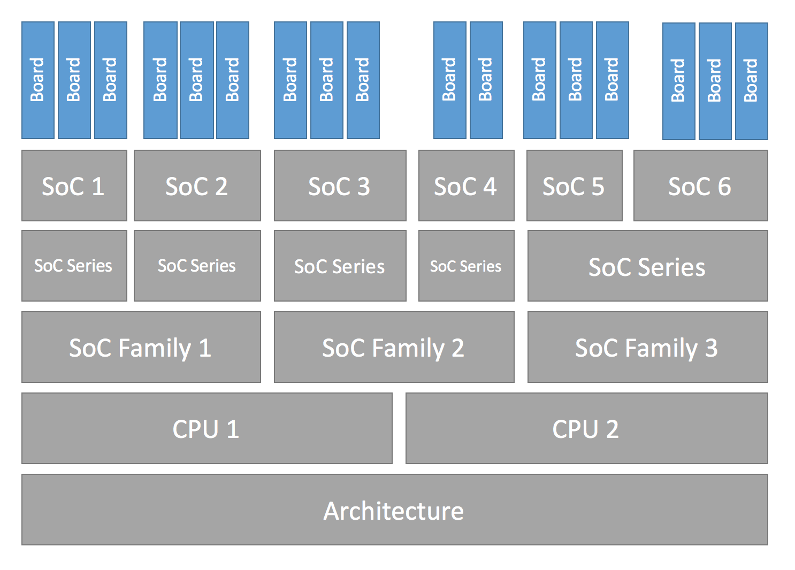
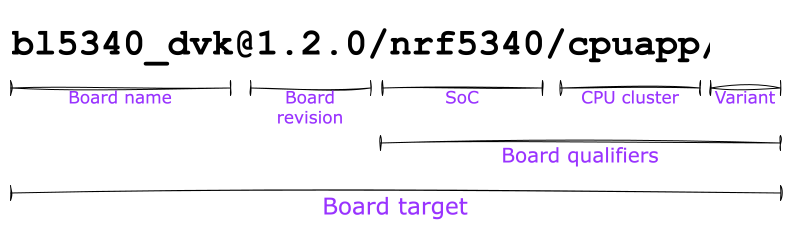

Board Porting Guide
To add Zephyr support for a new board, you at least need a board directory with various files in it. Files in the board directory inherit support for at least one SoC and all of its features. Therefore, Zephyr must support your SoC as well.
Transition to the current hardware model
Shortly after Zephyr 3.6.0 was released, a new hardware model was introduced to Zephyr. This new model overhauls the way both SoCs and boards are named and defined, and adds support for features that had been identified as important over the years. Among them:
Support for multi-core, multi-arch AMP (Asymmetrical Multi Processing) SoCs
Support for multi-SoC boards
Support for reusing the SoC and board Kconfig trees outside of the Zephyr build system
Support for advanced use cases with Sysbuild (System build)
Removal of all existing arbitrary and inconsistent uses of Kconfig and folder names
All the documentation in this page refers to the current hardware model. Please refer to the documentation in Zephyr v3.6.0 (or earlier) for information on the previous, now obsolete, hardware model.
More information about the rationale, development and concepts behind the new model can be found in the original issue, the original Pull Request and, for a complete set of changes introduced, the hardware model v2 commit.
Some non-critical features, enhancements and improvements of the new hardware model are still in development. Check the hardware model v2 enhancements issue for a complete list.
The transition from the previous hardware model to the current one (commonly referred to as “hardware model v2”) requires modifications to all existing board and SoC definitions. A decision was made not to provide direct backwards compatibility for the previous model, which leaves users transitioning from a previous version of Zephyr to one including the new model (v3.7.0 and onwards) with two options if they have an out-of-tree board (or SoC):
Convert the out-of-tree board to the current hardware model (recommended)
Take the SoC definition from Zephyr v3.6.0 and copy it to your downstream repository (ensuring that the build system can find it via a zephyr module or
SOC_ROOT). This will allow your board, defined in the previous hardware model, to continue to work
When converting your board from the previous to the current hardware model, we recommend first reading through this page to understand the model in detail. You can then use the example-application conversion Pull Request as an example on how to port a simple board. Additionally, a conversion script is available and works reliably in many cases (though multi-core SoCs may not be handled entirely). Finally, the hardware model v2 commit contains the full conversion of all existing boards from the old to the current model, so you can use it as a complete conversion reference.
Hardware support hierarchy
Zephyr’s hardware support is based on a series of hierarchical abstractions. Primarily, each board has one or more SoC. Each SoC can be optionally classed into an SoC series, which in turn may optionally belong to an SoC family. Each SoC has one or more CPU cluster, each containing one or more CPU core of a particular architecture.
You can visualize the hierarchy in the diagram below:
{kind=link}

Hardware support Hierarchy
Below are some examples of the hierarchy described in this section, in the form of a board per row with its corresponding hierarchy entries. Notice how the SoC series and SoC family levels are not always used.
CPU core |
||||||
|---|---|---|---|---|---|---|
nrf52832 |
nRF52832 |
nRF52 |
Nordic nRF |
Arm Cortex-M4 |
ARMv7-M |
|
mk64f12 |
MK64F12 |
Kinetis K6x |
NXP Kinetis |
Arm Cortex-M4 |
ARMv7-M |
|
openisa_rv32m1/ri5cy |
RV32M1 |
(Not used) |
(Not used) |
RI5CY |
RISC-V RV32 |
|
nrf5340/cpuapp |
nRF5340 |
nRF53 |
Nordic nRF |
Arm Cortex-M33 |
ARMv8-M |
|
nrf5340/cpunet |
nRF5340 |
nRF53 |
Nordic nRF |
Arm Cortex-M33 |
ARMv8-M |
|
mimx8ml8/a53 |
i.MX8M Plus |
i.MX8M |
NXP i.MX |
Arm Cortex-A53 |
ARMv8-A |
|
mimx8ml8/m7 |
i.MX8M Plus |
i.MX8M |
NXP i.MX |
Arm Cortex-M7 |
ARMv7-M |
|
mimx8ml8/adsp |
i.MX8M Plus |
i.MX8M |
NXP i.MX |
Cadence HIFI4 |
Xtensa LX6 |
Additional details about terminology can be found in the next section.
Board terminology
The previous section introduced the hierarchical manner in which Zephyr classifies and implements hardware support. This section focuses on the terminology used around hardware support, and in particular when defining and working with boards and SoCs.
The overall set of terms used around the concept of board in Zephyr is depicted in the image below, which uses the BL5340 DVK board as reference.
{kind=link}

Board terminology diagram
The diagram shows the different terms that are used to describe boards:
The board name:
bl5340_dvkThe optional board revision:
1.2.0The board qualifiers, that optionally describe the SoC, CPU cluster and variant:
nrf5340/cpuapp/nsThe board target, which uniquely identifies a combination of the above and can be used to specify the hardware to build for when using the tooling provided by Zephyr:
bl5340_dvk@1.2.0/nrf5340/cpuapp/ns
Formally this can also be seen as
board name[@revision][/board qualifiers], which can be extended to
board name[@revision][/SoC[/CPU cluster][/variant]].
If a board contains only one single-core SoC, then the SoC can be omitted from
the board target. This implies that if the board does not define any board
qualifiers, the board name can be used as a board target. Conversely, if
board qualifiers are part of the board definition, then the SoC can be omitted
by leaving it out but including the corresponding forward-slashes: //.
Continuing with the example above, The board BL5340 DVK is a single SoC
board where the SoC defines two CPU clusters: cpuapp and cpunet. One of
the CPU clusters, cpuapp, additionally defines a non-secure board variant,
ns.
The board qualifiers nrf5340/cpuapp/ns can be read as:
nrf5340: The SoC, which is a Nordic nRF5340 dual-core SoCcpuapp: The CPU clustercpuapp, which consists of a single Cortex-M33 CPU core. The number of cores in a CPU cluster cannot be determined from the board qualifiers.ns: a variant, in this casensis a common variant name in Zephyr denoting a non-secure build for boards supporting Trusted Firmware-M (TF-M).
Not all SoCs define CPU clusters or variants. For example a simple board
like the Thingy:52 contains a single SoC with no CPU clusters and
no variants.
For thingy52 the board target thingy52/nrf52832 can be read as:
thingy52: board name.nrf52832: The board qualifiers, in this case identical to the SoC, which is a Nordic nRF52832.
Make sure your SoC is supported
Start by making sure your SoC is supported by Zephyr. If it is, it’s time to Create your board directory. If you don’t know, try:
checking Supported Boards and Shields for names that look relevant, and reading individual board documentation to find out for sure.
asking your SoC vendor
If you need to add a SoC, CPU cluster, or even architecture support, this is the wrong page, but here is some general advice.
Architecture
CPU Core
CPU core support files go in core subdirectories under arch,
e.g. arch/x86/core.
See Install a Toolchain for information about toolchains (compiler, linker, etc.) supported by Zephyr. If you need to support a new toolchain, Build and Configuration Systems is a good place to start learning about the build system. Please reach out to the community if you are looking for advice or want to collaborate on toolchain support.
SoC
Zephyr SoC support files are in architecture-specific subdirectories of soc. They are generally grouped by SoC family.
When adding a new SoC family or series for a vendor that already has SoC
support within Zephyr, please try to extract common functionality into shared
files to avoid duplication. If there is no support for your vendor yet, you can
add it in a new directory zephyr/soc/<VENDOR>/<YOUR-SOC>; please use
self-explanatory directory names.
Create your board directory
Once you’ve found an existing board that uses your SoC, you can usually start by copy/pasting its board directory and changing its contents for your hardware.
You need to give your board a unique name. Run west boards for a list of
names that are already taken, and pick something new. Let’s say your board is
called plank (please don’t actually use that name).
Start by creating the board directory zephyr/boards/<VENDOR>/plank, where
<VENDOR> is your vendor subdirectory. (You don’t have to put your
board directory in the zephyr repository, but it’s the easiest way to get
started. See Custom Board, Devicetree and SOC Definitions for documentation on moving your
board directory to a separate repository once it’s working.)
Note
A <VENDOR> subdirectory is mandatory if contributing your board
to Zephyr, but if your board is placed in a local repo, then any folder
structure under <your-repo>/boards is permitted.
If the vendor is defined in the list in
dts/bindings/vendor-prefixes.txt then you must use
that vendor prefix as <VENDOR>. others may be used as vendor prefix if
the vendor is not defined.
Note
The board directory name does not need to match the name of the board. Multiple boards can even be defined in one directory.
Your board directory should look like this:
boards/<VENDOR>/plank
├── board.yml
├── board.cmake
├── CMakeLists.txt
├── doc
│ ├── plank.webp
│ └── index.rst
├── Kconfig.plank
├── Kconfig.defconfig
├── plank_<qualifiers>_defconfig
├── plank_<qualifiers>.dts
└── plank_<qualifiers>.yaml
Replace plank with your board’s name, of course.
The mandatory files are:
board.yml: a YAML file describing the high-level meta data of the boards such as the boards names, their SoCs, and variants. CPU clusters for multi-core SoCs are not described in this file as they are inherited from the SoC’s YAML description.plank_<qualifiers>.dts: a hardware description in devicetree format. This declares your SoC, connectors, and any other hardware components such as LEDs, buttons, sensors, or communication peripherals (USB, Bluetooth controller, etc).Kconfig.plank: the base software configuration for selecting SoC and other board and SoC related settings. Kconfig settings outside of the board and SoC tree must not be selected. To select general Zephyr Kconfig settings theKconfigfile must be used.
The optional files are:
Kconfig,Kconfig.defconfigsoftware configuration in Configuration System (Kconfig) formats. This provides default settings for software features and peripheral drivers.plank_defconfigandplank_<qualifiers>_defconfig: software configuration in Kconfig.confformat.board.cmake: used for Flash and debug supportCMakeLists.txt: if you need to add additional source files to your build.doc/index.rst,doc/plank.webp: documentation for and a picture of your board. You only need this if you’re Contributing your board to Zephyr.plank_<qualifiers>.yaml: a YAML file with miscellaneous metadata used by the Test Runner (Twister).
Board qualifiers of the form <soc>/<cpucluster>/<variant> are normalized so
that / is replaced with _ when used for filenames, for example:
soc1/foo becomes soc1_foo when used in filenames.
Write your board YAML
The board YAML file describes the board at a high level. This includes the SoC, board variants, and board revisions.
Detailed configurations, such as hardware description and configuration are done in devicetree and Kconfig.
The skeleton of the board YAML file is:
board:
name: <board-name>
vendor: <board-vendor>
revision:
format: <major.minor.patch|letter|number|custom>
default: <default-revision-value>
exact: <true|false>
revisions:
- name: <revA>
- name: <revB>
...
socs:
- name: <soc-1>
variants:
- name: <variant-1>
- name: <variant-2>
variants:
- name: <sub-variant-2-1>
...
- name: <soc-2>
...
It is possible to have multiple boards located in the board folder.
If multiple boards are placed in the same board folder, then the file
board.yml must describe those in a list as:
boards:
- name: <board-name-1>
vendor: <board-vendor>
...
- name: <board-name-2>
vendor: <board-vendor>
...
...
Write your devicetree
The devicetree file boards/<vendor>/plank/plank_<qualifiers>.dts describes your board
hardware in the Devicetree Source (DTS) format (as usual, change plank to
your board’s name). If you’re new to devicetree, see Introduction to devicetree.
In general, plank_<qualifiers>.dts should look like this:
/dts-v1/;
#include <your_soc_vendor/your_soc.dtsi>
/ {
model = "A human readable name";
compatible = "yourcompany,plank";
chosen {
zephyr,console = &your_uart_console;
zephyr,sram = &your_memory_node;
/* other chosen settings for your hardware */
};
/*
* Your board-specific hardware: buttons, LEDs, sensors, etc.
*/
leds {
compatible = "gpio-leds";
led0: led_0 {
gpios = < /* GPIO your LED is hooked up to */ >;
label = "LED 0";
};
/* ... other LEDs ... */
};
buttons {
compatible = "gpio-keys";
/* ... your button definitions ... */
};
/* These aliases are provided for compatibility with samples */
aliases {
led0 = &led0; /* now you support the blinky sample! */
/* other aliases go here */
};
};
&some_peripheral_you_want_to_enable { /* like a GPIO or SPI controller */
status = "okay";
};
&another_peripheral_you_want {
status = "okay";
};
In the case a board has only a single SoC, without any board variants then the dts file can be
named <plank>.dts instead, however this is not recommended due to the file silently be
unused if a variant or other SoC is added to the board.
If you’re in a hurry, simple hardware can usually be supported by copy/paste followed by trial and error. If you want to understand details, you will need to read the rest of the devicetree documentation and the devicetree specification.
Example: FRDM-K64F and Hexiwear K64
This section contains concrete examples related to writing your board’s devicetree.
The FRDM-K64F and Hexiwear K64 board devicetrees are defined in frdm_k64fs.dts and hexiwear_k64.dts respectively. Both boards have NXP SoCs from the same Kinetis SoC family, the K6X.
Common devicetree definitions for K6X are stored in nxp_k6x.dtsi, which is included by both board
.dts files. nxp_k6x.dtsi
in turn includes
armv7-m.dtsi, which has common definitions
for Arm v7-M cores.
Since nxp_k6x.dtsi is meant to be
generic across K6X-based boards, it leaves many devices disabled by default
using status properties. For example, there is a CAN controller defined as
follows (with unimportant parts skipped):
can0: can@40024000 {
...
status = "disabled";
...
};
It is up to the board .dts or application overlay files to enable these
devices as desired, by setting status = "okay". The board .dts
files are also responsible for any board-specific configuration of the device,
such as adding nodes for on-board sensors, LEDs, buttons, etc.
For example, FRDM-K64 (but not Hexiwear K64) .dts enables the CAN
controller and sets the bus speed:
&can0 {
status = "okay";
};
The &can0 { ... }; syntax adds/overrides properties on the node with label
can0, i.e. the can@4002400 node defined in the .dtsi file.
Other examples of board-specific customization is pointing properties in
aliases and chosen to the right nodes (see Aliases and chosen nodes), and
making GPIO/pinmux assignments.
Write Kconfig files
Zephyr uses the Kconfig language to configure software features. Your board needs to provide some Kconfig settings before you can compile a Zephyr application for it.
Setting Kconfig configuration values is documented in detail in Setting Kconfig configuration values.
There is one mandatory Kconfig file in the board directory, and several optional
files for a board named plank:
boards/<vendor>/plank
├── Kconfig
├── Kconfig.plank
├── Kconfig.defconfig
└── plank_<qualifiers>_defconfig
Kconfig.plankA shared Kconfig file which can be sourced both in Zephyr Kconfig and sysbuild Kconfig trees.
This file selects the SoC in the Kconfig tree and potential other SoC related Kconfig settings. This file must not select anything outside the reusable Kconfig board and SoC trees.
A
Kconfig.plankmay look like this:config BOARD_PLANK select SOC_SOC1
The Kconfig symbols
BOARD_boardandBOARD_normalized_board_targetare constructed by the build system, therefore no type shall be defined in above code snippet.KconfigIncluded by boards/Kconfig.
This file can add Kconfig settings which are specific to the current board.
Not all boards have a
Kconfigfile.A board specific setting should be defining a custom setting and usually with a prompt, like this:
config BOARD_FEATURE bool "Board specific feature"
If the setting name is identical to an existing Kconfig setting in Zephyr and only modifies the default value of said setting, then
Kconfig.defconfigshould be used instead.Kconfig.defconfigBoard-specific default values for Kconfig options.
Not all boards have a
Kconfig.defconfigfile.The entire file should be inside an
if BOARD_PLANK/endifpair of lines, like this:if BOARD_PLANK config FOO default y if NETWORKING config SOC_ETHERNET_DRIVER default y endif # NETWORKING endif # BOARD_PLANK
plank_<qualifiers>_defconfig(orplank_defconfigin limited circumstances)A Kconfig fragment that is merged as-is into the final build directory
.configwhenever an application is compiled for your board.plank_defconfigcan only be used with boards that have no qualifiers, no variants and a single SoC present, though this style of naming is not recommended due to samples/tests or downstream usage breaking suddenly without warning if a new SoC or board variant/qualifier is added to an board in upstream Zephyr.
Note
Multiple files are not merged and there is no fallback mechanism for files, this means if there
is a board with 2 different SoCs and each one has 2 board variants, a plank_defconfig
file would be wholly unused, for the first qualifier and variant
plank_<soc1>_<variant1>_defconfig will be used, it will not include other file.
The _defconfig should contain mandatory settings for your UART,
console, etc. The results are architecture-specific, but typically look
something like this:
CONFIG_GPIO=y
CONFIG_CONSOLE=y
CONFIG_UART_CONSOLE=y
CONFIG_SERIAL=y
plank_x_y_z_defconfig/plank_<qualifiers>_x_y_z_defconfigA Kconfig fragment that is merged as-is into the final build directory
.configwhenever an application is compiled for your board revisionx.y.z.
Build, test, and fix
Now it’s time to build and test the application(s) you want to run on your board until you’re satisfied.
For example:
west build -b plank samples/hello_world
west flash
For west flash to work, see Flash and debug support below. You can
also just flash build/zephyr/zephyr.elf, zephyr.hex, or
zephyr.bin with any other tools you prefer.
General recommendations
For consistency and to make it easier for users to build applications which remain board agnostic, please follow these guidelines when porting a board you intend to contribute to Zephyr:
- Enable valuable components in Devicetree
Devicetree nodes for valuable onboard components (LEDs, buttons, sensors, onboard USB/Ethernet/BLE/Wi-Fi, etc.) must be enabled by default and have correct pin control and driver configuration so that they work out of the box.
- Keep subsystems disabled by default (Kconfig)
Do not enable subsystems in the board defconfig unless they are strictly required for basic board operation, or are explicitly listed as exceptions in these recommendations.
- Configure system clock and tick source
Set up a functioning system clock and tick source.
- Provide a default console
Use the
zephyr,consolechosen node to point to the UART controller used for console output.Boards with built-in debug or a USB-to-UART adapter should set the console to the UART controller connected to that adapter.
USB-only boards without any debug adapter must include the common USB CDC-ACM Kconfig and DTS fragments to enable CDC-ACM UART as a default backend for logging and shell.
- Add shield interface definitions
For boards exposing standard expansion headers, add connector nodes and pin-muxing. Enable only the peripherals needed for the expected/standard connector functionality.
- Configure pins and peripheral instances
Map peripherals to the correct pins (e.g., SPI on Arduino SPI pins) and provide default pinmux entries supporting the board’s features.
- Enable networking interfaces
If networking hardware is present, configure default interfaces for each supported technology so that networking samples work out of the box.
- Enable GPIO controllers
All GPIO ports connected to onboard components or expansion headers should be enabled.
- Enable MPU and stack protection
It is recommended to enable the MPU when available (unless memory resources are too limited). When the MPU is enabled, it is recommended to also enable hardware stack protection (
CONFIG_HW_STACK_PROTECTION) to ease debugging by allowing the kernel to detect stack overflows.
Flash and debug support
Zephyr supports Building, Flashing and Debugging via west extension commands.
To add west flash and west debug support for your board, you need to
create a board.cmake file in your board directory. This file’s job is
to configure a “runner” for your board. (There’s nothing special you need to
do to get west build support for your board.)
“Runners” are Zephyr-specific Python classes that wrap flash and debug
host tools and integrate with west and the zephyr build
system to support west flash and related commands. Each runner supports
flashing, debugging, or both. You need to configure the arguments to these
Python scripts in your board.cmake to support those commands like this
example board.cmake:
board_runner_args(jlink "--device=nrf52" "--speed=4000")
board_runner_args(pyocd "--target=nrf52" "--frequency=4000000")
include(${ZEPHYR_BASE}/boards/common/nrfutil.board.cmake)
include(${ZEPHYR_BASE}/boards/common/nrfjprog.board.cmake)
include(${ZEPHYR_BASE}/boards/common/jlink.board.cmake)
include(${ZEPHYR_BASE}/boards/common/pyocd.board.cmake)
This example configures the nrfutil, nrfjprog, jlink, and pyocd
runners.
Warning
Runners usually have names which match the tools they wrap, so the jlink
runner wraps Segger’s J-Link tools, and so on. But the runner command line
options like --speed etc. are specific to the Python scripts.
Note
Runners and board configuration should be created without being targeted to
a single operating system if the tool supports multiple operating systems,
nor should it rely upon special system setup/configuration. For example; do
not assume that a user will have prior knowledge/configuration or (if using
Linux) special udev rules installed, do not assume one specific /dev/X
device for all platforms as this will not be compatible with Windows or
macOS, and allow for overriding of the selected device so that multiple
boards can be connected to a single system and flashed/debugged at the
choice of the user.
For more details:
Run
west flash --contextto see a list of available runners which support flashing, andwest flash --context -r <RUNNER>to view the specific options available for an individual runner.Run
west debug --contextandwest debug --context <RUNNER>to get the same output for runners which support debugging.Run
west flash --helpandwest debug --helpfor top-level options for flashing and debugging.See Configuration Options for Python APIs.
Look for
board.cmakefiles for other boards similar to your own for more examples.
To see what a west flash or west debug command is doing exactly, run it
in verbose mode:
west --verbose flash
west --verbose debug
Verbose mode prints any host tool commands the runner uses.
The order of the include() calls in your board.cmake matters. The
first include sets the default runner if it’s not already set. For example,
including nrfjprog.board.cmake first means that nrfjprog is the default
flash runner for this board. Since nrfjprog does not support debugging,
jlink is the default debug runner.
Multiple board revisions
See Building for a board revision for basics on this feature from the user perspective.
Board revisions are described in the revision entry of the
board.yml.
board:
revision:
format: <major.minor.patch|letter|number|custom>
default: <default-revision-value>
exact: <true|false>
revisions:
- name: <revA>
- name: <revB>
Zephyr natively supports the following revision formats:
major.minor.patch: match a three digit revision, such as1.2.3.number: matches integer revisionsletter: matches single letter revisions fromAtoZonly
Fuzzy revision matching
Fuzzy revision matching is enabled per default.
If the user selects a revision between those available, the closest revision
number that is not larger than the user’s choice is used. For example, if the
board plank defines revisions 0.5.0, and 1.5.0 and the user builds
for plank@0.7.0, the build system will target revision 0.5.0.
The build system will print this at CMake configuration time:
-- Board: plank, Revision: 0.7.0 (Active: 0.5.0)
This allows you to only create revision configuration files for board revision numbers that introduce incompatible changes.
Similarly for letter revision format, if revisions A, D, and F
are defined and the user builds for plank@E, the build system will target
revision D.
Exact revision matching
Exact revision matching is enabled when exact: true is specified in the
revision section in board.yml.
When exact is defined then building for plank@0.7.0 in the above example
will result in the following error message:
Board revision `0.7.0` not found. Please specify a valid board revision.
Board revision configuration adjustment
When the user builds for board plank@<revision> it is possible to make
adjustments to the board’s normal configuration.
As described in the Write your devicetree and
Write Kconfig files sections the board default configuration is created
from the files <board>.dts / <board>_<qualifiers>.dts and
<board>_defconfig / <board>_<qualifiers>_defconfig.
When building for a specific board revision, the above files are used as a
starting point and the following board files will be used in addition:
<board>_<qualifiers>_<revision>_defconfig: a specific revision defconfig which is only used for the board and SOC / variants identified by<board>_<qualifiers>.<board>_<revision>_defconfig: a specific revision defconfig which is used for the board regardless of the SOC / variants.<board>_<qualifiers>_<revision>.overlay: a specific revision dts overlay which is only used for the board and SOC / variants identified by<board>_<qualifiers>.<board>_<revision>.overlay: a specific revision dts overlay which is used for the board regardless of the SOC / variants.
This split allows boards with multiple SoCs, multi-core SoCs, or variants to place common revision adjustments which apply to all SoCs and variants in a single file, while still providing the ability to place SoC or variant specific adjustments in a dedicated revision file.
Using the plank board from previous sections, then we could have the following
revision adjustments:
boards/zephyr/plank
├── plank_0_5_0_defconfig # Kconfig adjustment for all plank board qualifiers on revision 0.5.0
├── plank_0_5_0.overlay # DTS overlay for all plank board qualifiers on revision 0.5.0
└── plank_soc1_foo_1_5_0_defconfig # Kconfig adjustment for plank board when building for soc1 variant foo on revision 1.5.0
Custom revision.cmake files
Some boards may not use board revisions supported natively by Zephyr. For example string revisions.
One reason why Zephyr doesn’t support string revisions is that strings can take
many forms and it’s not always clear if the given strings are just strings, such
as blue, green, red, etc. or if they provide an order which can be
matched against higher or lower revisions, such as alpha, beta`,
gamma.
Due to the sheer number of possibilities with strings, including the possibility
of doing regex matches internally, then string revisions must be done using
custom revision type.
To indicate to the build system that custom revisions are used, the format
field in the revision section of the board.yml must be written as:
board:
revision:
format: custom
When using custom revisions then a revision.cmake must be created in the
board directory.
The revision.cmake will be included by the build system when building
for the board and it is the responsibility of the file to validate the revision
specified by the user.
The BOARD_REVISION variable holds the revision value specified by the user.
To signal to the build system that it should use a different revision than the
one specified by the user, revision.cmake can set the variable
ACTIVE_BOARD_REVISION to the revision to use instead. The corresponding
Kconfig files and devicetree overlays must be named
<board>_<ACTIVE_BOARD_REVISION>_defconfig and
<board>_<ACTIVE_BOARD_REVISION>.overlay.
Contributing your board
If you want to contribute your board to Zephyr, first – thanks!
There are some extra things you’ll need to do:
Make sure you’ve followed all the General recommendations. They are requirements for boards included with Zephyr.
Add documentation for your board using the template file doc/templates/board.tmpl. See Documentation Generation for information on how to build your documentation before submitting your pull request.
Prepare a pull request adding your board which follows the Contribution Guidelines.
Board extensions
The board hardware model in Zephyr allows you to extend an existing board with new board variants. Such board extensions can be done in your custom repository and thus outside of the Zephyr repository.
Extending an existing board with an extra variant allows you to adjust an existing board and thereby during build to select building for the existing, unmodified board, or the new variant.
To extend an existing board, first create a board.yml in your extended
board. Make sure to use the directory structure described in
Create your board directory.
The skeleton of the board YAML file for extending a board is:
board:
extend: <existing-board-name>
variants:
- name: <new-variant>
qualifier: <existing-qualifier>
When extending a board, your board directory should look like:
boards/<VENDOR>/plank
├── board.yml
├── plank_<new-qualifiers>_defconfig
└── plank_<new-qualifiers>.dts
Replace plank with the real name of the board you extend.
In some cases you might want to also adjust additional settings, like the
Kconfig.defconfig or Kconfig.board.
Therefore it is also possible to provide the following in addition when
extending a board.
boards/<VENDOR>/plank
├── board.cmake
├── Kconfig
├── Kconfig.plank
├── Kconfig.defconfig
└── plank_<new-qualifiers>.yaml